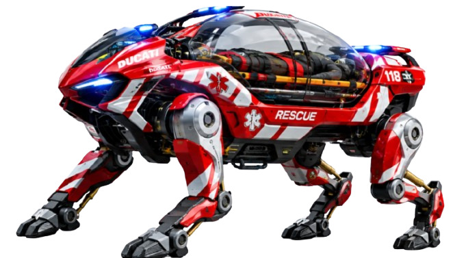

\ RESQ-X brings medical assistance and evacuation capability to mountains, rubble, forests, and other inaccessible environments.\
\ \
\ \Traditional emergency response units face severe physical and environmental limits when deployed in hazardous or extreme conditions.
\ \4x4 vehicles, quads, and conventional ground rescue equipment struggle with narrow forest trails, steep mountain inclines, dense rubble, and active landslide zones.
\Transporting heavy medical equipment and stretcher systems over long distances and unstable ground exposes human rescuers to physical exhaustion and unnecessary risk.
\Helicopters and combustion-powered rescue vehicles generate severe noise, exhaust emissions, and environmental turbulence, often hindering local rescue communication.
\\ RESQ-X is an electric, remotely supervised quadrupedal rescue vehicle built to reach victims where conventional transport fails.\
\Seamless integration into existing emergency deployment protocols.
\ \Integrated LiDAR, thermal imaging, and acoustic sensors identify the victim and map the surrounding terrain grid.
\A trained operator remotely guides RESQ-X through complex obstacles while onboard AI evaluates footing stability.
\The specialized rescue module securely and carefully positions the patient onto the active-suspension stretcher.
\Non-invasive sensors continuously stream real-time vital metrics directly to medical response control centers.
\RESQ-X navigates back down optimal terrain routes, transporting the victim safely to first responders.
\Every subsystem is designed to deliver performance in extreme conditions.
\ \Multi-axis articulated legs adapt to uneven ground, mud, snow, and boulders with dynamic self-balancing actuators.
\Onboard neural networks process real-time spatial data to recommend optimal footing points without replacing operator control.
\Dual spectral thermal optics cut through dense fog, darkness, and smoke to maintain full situational awareness.
\Continuous monitoring of ambient temperature, air toxicity, structural integrity, and elevation metrics.
\Ultra-low-latency encrypted radio control link allowing operators full command from safe standoff distances.
\High-torque brushless electric motors provide silent, instant power with low maintenance overhead.
\Non-invasive biometrics module continuously measures heart rate, blood oxygen levels, and core temperature.
\Active gyroscopic dampening ensures patient orientation remains level regardless of vehicle body incline.
\\ RESQ-X is strictly engineered to empower professional search and rescue teams. Autonomous subroutines assist with terrain navigation, but critical life-support and maneuver decisions remain under human authority.\
\ \\ Electric drivetrain propulsion significantly minimizes direct operational exhaust and acoustic disturbance, making it ideal for deployments in fragile ecosystems, national forests, and protected natural wilderness areas.\
\\ Built on an extensible architecture, RESQ-X continuously improves through real-world deployment telemetry, operator insights, software updates, and expandable specialized medical modules.\
\Versatile deployment across high-risk terrain types.
\ \Traversing scree fields, steep cliff bases, and alpine paths where heavy vehicles cannot pass.
\Navigating structural collapse zones and landslide fields safely following earthquakes or severe weather.
\Navigating thick timberlands, unpaved underbrush, and narrow wilderness corridors.
\Operating through standing water, mud deposits, and storm debris fields during emergency evacuations.
\Using thermal vision systems to locate casualties in total darkness without relying solely on spotlights.
\Extending team operational range across vast nature reserves without exhaustion.
\\ Our vision balances progressive automation with safety. As autonomous navigation algorithms mature, RESQ-X will take on greater pathfinding autonomy while strictly preserving human authority over medical and life-critical decisions.\
\Designed specifically for integration into emergency service fleets.
\*Conceptual prototype specifications subject to ongoing testing and validation.
\ \Realistic B2B procurement structure for municipal and professional teams.
\ \Complete turn-key emergency vehicle deployment package.
\ \\ Equip the people who go where nobody else can. Request an evaluation demonstration for your rescue team.\
\ \ \ \